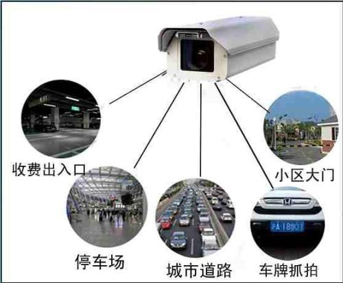
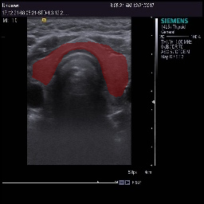
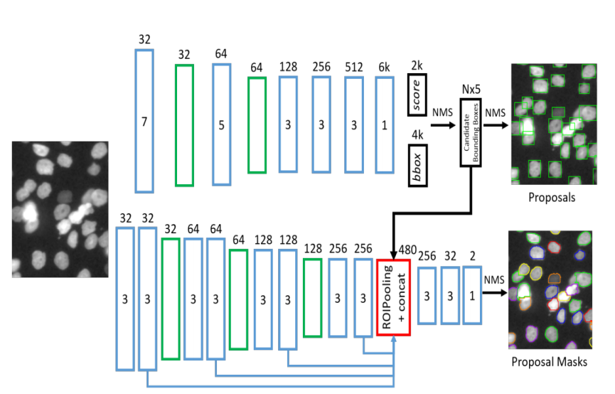
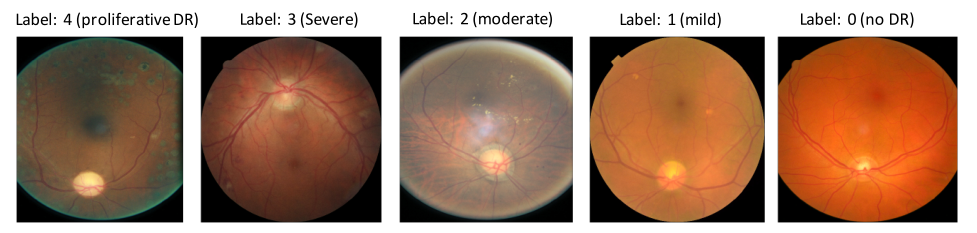

嵌入式智能视觉系统

将图像识别与视觉处理设备相结合，用电脑算法处理人力难以识别或者需要耗费大量人力的视频图像，大大缩减了人力物力的同时提高了精确度。
我们实验室目前在多个方向均有发展。
1.甲状腺分割诊断

甲状腺分割诊断可以在b超中分割出甲状腺位置，对于医生进行诊断有很大帮助。
具有精密，实验结果准确等的特点，可以置入目前很多医疗器件中，对于医学诊断的发展有很大意义。
目前我们实验室已经与复旦大学附属肿瘤医院超声科合作并在研发这项技术。
2.乳腺肿瘤细胞分割

乳腺肿瘤细胞分割可以检测乳腺肿瘤细胞位置，为治疗乳腺肿瘤提供了有力的支撑。
目前已经可以植入目前市场上大多数医疗设备中。
3.糖尿病视网膜病变检测

糖尿病视网膜病变检测可以根据检测视网膜的病变检测出病人是否患有糖尿病，该技术使用全连接层（FC），仅仅使用卷积层和pooling层。为了减少结构参数，加快收敛。
可以自主研发检测病变器件，目前该技术还在研发中。
4.无人机，无人车
无人机，无人车目前正处于火热发展状态，这两项技术都是汽车，飞机与视觉处理的结合。能够让汽车具有视觉处理的功能，就好比让汽车长了一双眼睛能够看清道路，在通过一定的算法，即可让汽车试验不用人可以自动驾驶。
目前实验室还在进行算法的研发中。